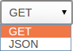

How can I integrate my test suite to inform review acceptance or rejection?
Integrating Perforce Swarm with a test suite involves enabling Automated Tests in your project's configuration and providing a trigger URL. When the trigger URL is requested, Swarm expects your test suite to be executed. When the tests complete, Swarm expects either a pass callback URL or fail callback URL to be requested by your test suite.
-
Visit your project page.
-
 Click . The
Edit Project page is displayed.
Click . The
Edit Project page is displayed.
-
Ensure that paths in each named branch configured for the project do not overlap with paths in other named branches.
-
Click the checkbox next to Automated Tests to display the Automated Tests configuration fields:

-
Provide a URL that triggers your test suite execution.
Special arguments are available to inform your test suite of various details from Swarm:
- {change}
-
The change number.
- {status}
-
Status of the shelved change, shelved or committed.
- {review}
-
The review's identifier.
- {project}
-
The project's identifier.
- {projectName}
-
The project's name.
- {branch}
-
The branch identifier(s) impacted by the review, comma-separated.
- {branchName}
-
The branch name(s) impacted by the review, comma-separated.
- {pass}
-
Tests pass callback URL.
- {fail}
-
Tests fail callback URL.
Note
The
{pass}and{fail}are composed automatically by Swarm, and include Swarm's own per-review authentication tokens. -
 Optionally, specify any parameters that your automated tests require that must be sent via HTTP
POSTin the POST Parameters field. ThePOSTparameters can include the special arguments listed above.You can also choose the format of the
POSTparameters, eitherGETorJSON. WhenGETis selected, thePOSTparameters are parsed intoname=valuepairs. WhenJSONis selected, any specified parameters are passed raw in thePOSTbody.
Configuring Jenkins for Swarm integration
Important
Your Jenkins host needs to be able to communicate with the Swarm host, and vice versa. Ensure that the appropriate DNS/host configuration is in place, and that each server can reach the other via HTTP/HTTPS.
-
Install the
p4-pluginin Jenkins.https://wiki.jenkins-ci.org/display/JENKINS/P4+Plugin
-
Configure a Jenkins project:
-
Specify the job name so that it matches the project identifier used in the trigger URL, as defined below.
For example, the computed value of
{projectName}_{branchName}.Or, edit the trigger URL to use the Jenkins job name you specify.
-
Make the build parameterized to accept these parameters (note that these are named to match up with the script that is called):
-
status -
whether the changelist to be tested is shelved or submitted
-
change -
changelist # to run tests against
-
review -
the review's identifier
-
pass -
the URL to wget if the build succeeds
-
fail -
the URL to wget if the build fails
-
-
Select
Perforce Softwarefor the Source Code Management section.Important
You may see
Perforcein the Source Code Management section. This represents an earlier community-provided Perforce plugin that does not include support for Swarm. -
Setup credentials and workspace behavior as needed.
See the Credentials and Workspaces sections of the p4-plugin documentation for details.
Important
The client workspace configured in Jenkins must have a view that includes the paths defined for that branch in Swarm.
-
-
Configure your Swarm project to run automated tests with a URL like this:
http://
jenkins_host:8080/job/{projectName}_{branchName}/review/build?status={status}&review={review}&change={change}&pass={pass}&fail={fail}Important
For Jenkins, the job name needs to match the job identifier in the URL. In the example above, this is the computed value of
{projectName}_{branchName}.If you prefer a different naming scheme in Jenkins, replace
{projectName}_{branchName}in the URL above with the project name actually defined in Jenkins.Note
If your build script has access to the results of test execution, include a GET or POST parameter called
urlwhen calling thepassorfailURLs. Swarm uses the providedurlto link reviews to the test results.Important
If security is enabled in Jenkins, the trigger URL needs to include credentials. Follow these steps:
-
Create a Jenkins user that will trigger Swarm builds. For example
swarm. -
Log into Jenkins as the new user.
-
Click on the user's username in the Jenkins toolbar.
-
Scroll down to API Token.
-
Click .
-
Incorporate the value of the API Token into the Swarm trigger URL.
For example, if the username is
swarmand the API Token value is832a5db7e5500c1288324c1441460610, the Swarm trigger URL should be:http://swarm:832a5db7e5500c1288324c1441460610@
jenkins_host:8080/job/{projectName}_{branchName}/review/build?cause=Automated%20test%20triggered%20for%20Swarm%20project%20{projectName},%20branch%20{branchName},%20review%20{review}&status={status}&review={review}&change={change}&pass={pass}&fail={fail}
-